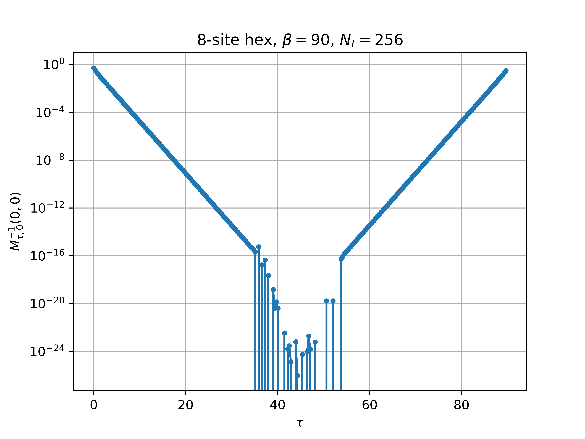

Calculation of spatial correlators directly from the Sausage
Preliminary Expressions
- The sausage:
\[ \underbrace{F_k(N_t-1).F_k(N_t-2)\ldots F_k(0)}_{\mathrm{``sausage"}}\quad;\quad F_k(t)\equiv \underbrace{e^{\tilde\kappa}}_{\mathrm{dense}}. \underbrace{e^{i\phi_t(x)}}_{\mathrm{diagonal}} \quad;\quad \tilde\kappa=\kappa\frac{\beta}{N_t}\]
- “prefix”/“suffix” terms:
\[ \Pi(t) = F_k(t).F_k(t-1)\ldots F_k(0)\ ,\ \Pi(-1)\equiv\mathbb{1}\quad;\quad \Sigma(t) = F_k(N_t-1).F_k(N_t-2)\ldots F_k(t)\]
“sausage” is simply \(\Sigma(t).\Pi(t-1) = \Sigma(0)=\Pi(N_t-1)\) for any value \(t\)
Of fundamental importance is the inverse fermion matrix \(M^{-1}\):
\[ \begin{pmatrix} \mathbb{1} & 0 & 0 & \cdots & F_k(N_t-1)\\ -F_k(0) & \mathbb{1} & 0 & \cdots & 0 \\ 0 & -F_k(1) & \mathbb{1} & \cdots & 0\\ \vdots & \vdots & \ddots & \ddots & \vdots\\ 0 & \cdots & -F_k(N_t-3) & \mathbb{1} & 0\\ 0 & \cdots & 0 & -F_k(N_t-2) & \mathbb{1} \end{pmatrix}^{-1}_{t_f,t_i} \]
- The inverse of the fermion matrix is
\[ \begin{pmatrix} [\mathbb{1}+\Sigma(0)]^{-1} & -\Sigma(1).[\mathbb{1}+\Pi(0).\Sigma(1)]^{-1} & -\Sigma(2).[\mathbb{1}+\Pi(1).\Sigma(2)]^{-1} & \cdots& -\Sigma(t_i).[\mathbb{1}+\Pi(t_i-1).\Sigma(t_i)]^{-1} &\cdots & -\Sigma(N_t-1).[\mathbb{1}+\Pi(N_t-2).\Sigma(N_t-1)]^{-1}\\ F_k(0).[\mathbb{1}+\Sigma(0)]^{-1} & [\mathbb{1}+\Pi(0).\Sigma(1)]^{-1} & -F_k(0).\Sigma(2).[\mathbb{1}+\Pi(1).\Sigma(2)]^{-1} & & & \cdots & \vdots \\ F_k(1).F_k(0).[\mathbb{1}+\Sigma(0)]^{-1} & F_k(1).[\mathbb{1}+\Pi(0).\Sigma(1)]^{-1} & [\mathbb{1}+\Pi(1).\Sigma(2)]^{-1} & & & \cdots & \vdots\\ F_k(2).F_k(1).F_k(0).[\mathbb{1}+\Sigma(0)]^{-1} & F_k(2).F_k(1).[\mathbb{1}+\Pi(0).\Sigma(1)]^{-1} & F_k(2).[\mathbb{1}+\Pi(1).\Sigma(2)]^{-1} & \cdots& & & \vdots\\ \vdots & \vdots & \ddots & \ddots & \vdots & & \\ \Pi(t_f-1).[\mathbb{1}+\Sigma(0)]^{-1} & \cdots & & \cdots & [\mathbb{1}+\Pi(t_i-1).\Sigma(t_i)]^{-1} & & \cdots\\ \vdots & \cdots & \cdots & \cdots & &[\mathbb{1}+\Pi(N_t-3).\Sigma(N_t-2)]^{-1} & -\Pi(N_t-3).\Sigma(N_t-1).[\mathbb{1}+\Pi(N_t-2).\Sigma(N_t-1)]^{-1}\\ \Pi(N_t-2).[\mathbb{1}+\Sigma(0)]^{-1} & \cdots & \vdots & & & F_k(N_t-2).[\mathbb{1}+\Pi(N_t-3).\Sigma(N_t-2)]^{-1} & [\mathbb{1}+\Pi(N_t-2).\Sigma(N_t-1)]^{-1} \end{pmatrix} \]
- General expression in terms of “prefixes/suffixes” is
\[ M^{-1}[\phi]_{t_f,t_i}= \begin{cases} \Pi(t_f-1).\Pi^{-1}(t_i-1).[\mathbb{1}+\Pi(t_i-1).\Sigma(t_i)]^{-1} & \forall\ t_f\ge t_i\\ -\Pi(t_f-1).\Sigma(t_i).[\mathbb{1}+\Pi(t_i-1).\Sigma(t_i)]^{-1} & \forall\ t_f < t_i \end{cases} \tag{1}\]
- Also equivalent, after some manipulation, to
\[ M^{-1}[\phi]_{t_f,t_i}= \begin{cases} \Pi(t_f-1).[\Pi(t_i-1)+\Pi(t_i-1).\Sigma(0)]^{-1}&=\Pi(t_f-1).[\mathbb{1}+\Sigma(0)]^{-1}.\Pi^{-1}(t_i-1) & \forall\ t_f\ge t_i\\ -\Pi(t_f-1).[\Pi(t_i-1)+\Sigma^{-1}(t_i)]^{-1}&=-\Pi(t_f-1).[\mathbb{1}+\Sigma(0)]^{-1}.\Sigma(t_i) & \forall\ t_f < t_i \end{cases} \tag{2}\]
- I worry that these expressions, as they are written, are not stable to compute, so an alternative is1
\[ M^{-1}[\phi]_{t_f,t_i}= \begin{cases} [\Pi(t_i-1).\Pi^{-1}(t_f-1)+\Pi(t_i-1).\Sigma(t_f)]^{-1} & \forall\ t_f\ge t_i\\ -[\Pi(t_i-1).\Pi^{-1}(t_f-1)+\Sigma^{-1}(t_i).\Pi^{-1}(t_f-1)]^{-1} & \forall\ t_f < t_i \end{cases} \tag{3}\]
- Finn points out another representation obtained from using the Woodbury Matrix Identity:
\[ M^{-1}[\phi]_{t_f,t_i}= \begin{cases} \Pi(t_f-1).\Pi^{-1}(t_i-1)-\Pi(t_f-1).[\mathbb{1}+\Sigma(0)]^{-1}.\Sigma(t_i) & \forall\ t_f\ge t_i\\ -\Pi(t_f-1).[\mathbb{1}+\Sigma(0)]^{-1}.\Sigma(t_i) & \forall\ t_f < t_i \end{cases} \tag{4}\]
Unifying all these expressions
- Let me make the more general definition that incorporates both ‘prefix’ and ‘suffix’ terms
\[ \Pi(t',t)= \begin{cases} F_k(t').F_k(t'-1)\ldots F_k(t+1).F_k(t)\quad &\forall\ t'\ge t\\ F_k((t'+N_t)\%N_t).F_k(t'+N_t-1)\%N_t)\ldots F_k((t+1)\%N_t).F_k(t)\quad &\forall\ t'< t \end{cases} \]
- This definition allows for a very compact expression1 for \(M^{-1}\)
\[ M^{-1}[\phi]_{t_f,t_i}=\mathcal{B}_{t_f,t_i}\times \begin{cases} [\mathbb{1}+\Pi(t_i-1,t_i)]^{-1} & \forall\ t_f = t_i\\ \left[\Pi^{-1}(t_f-1,t_i)+\Pi(t_i-1,t_f)\right]^{-1} & \forall\ t_f \ne t_i \end{cases} \tag{5}\]
where
\[ \begin{equation} \mathcal{B}_{t_f,t_i}= \begin{cases} +1 & \forall\ t_f\ge t_i\\ -1 & \forall\ t_f<t_i \end{cases} \end{equation} \]
- Let’s assume we have decompositions for \(\Pi(t',t)\ \forall\ t',t\)
\[ \Pi(t',t) = U_\pi(t',t).D_\pi(t',t).V_\pi(t',t)\implies \Pi^{-1}(t',t) = V^{-1}_\pi(t',t).D^{-1}_\pi(t',t).U^\dagger_\pi(t',t) \]
- With the decompositions of \(\Pi(t',t)\) obtained above, I can write the \(t_f\ne t_i\) part1 of Equation 5 as
\[ [\Pi^{-1}(t_f-1,t_i)+\Pi(t_i-1,t_f)]^{-1}=\left[V_\pi^{-1}(t_f-1,t_i).D^{-1}_\pi(t_f-1,t_i).U^\dagger_\pi(t_f-1,t_i)+U_\pi(t_i-1,t_f).D_\pi(t_i-1,t_f).V_\pi(t_i-1,t_f)\right]^{-1} \]
- This expression needs to be decomposed one last time, which requires that I choose one of the two terms to make diagonally dominant in order to do the decomposition. Here’s my strategy:
If \(\max\left(|D^{-1}_\pi(t_f-1,t_i)|\right) > \max\left(|D_\pi(t_i-1,t_f)|\right)\), then I decompose as follows:
\[ \begin{align} [\Pi^{-1}(t_f-1,t_i)+\Pi(t_i-1,t_f)]^{-1}&=[V_\pi^{-1}(t_f-1,t_i)\underbrace{\left(D^{-1}_\pi(t_f-1,t_i)+V_\pi(t_f-1,t_i).U_\pi(t_i-1,t_f).D_\pi(t_i-1,t_f).V_\pi(t_i-1,t_f).U_\pi(t_f-1,t_i)\right)}_{u.d.t}U^\dagger_\pi(t_f-1,t_i)]^{-1}\\ &=U_\pi(t_f-1,t_i).t^{-1}.d^{-1}.u^\dagger.V_\pi(t_f-1,t_i) \end{align} \]
otherwise I decompose as
\[ \begin{align} [\Pi^{-1}(t_f-1,t_i)+\Pi(t_i-1,t_f)]^{-1}&=[U_\pi(t_i-1,t_f)\underbrace{\left(U^\dagger_\pi(t_i-1,t_f).V^{-1}_\pi(t_f-1,t_i).D^{-1}_\pi(t_f-1,t_i)U^\dagger_\pi(t_f-1,t_i).T^{-1}_\pi(t_i-1,t_f)+D_\pi(t_i-1,t_f)\right)}_{u.d.t}V_\pi(t_i-1,t_f)]^{-1}\\ &=V^{-1}_\pi(t_i-1,t_t).t^{-1}.d^{-1}.u^\dagger.U^\dagger_\pi(t_i-1,t_f) \end{align} \]

Example of diagonal spatial correlator obtained in the non-interacting limit
Calculating the fermion propagator on the fly
- Currently in NSL the prefix \(\Pi(t)\) and suffix \(\Sigma(t)\) terms are evaluated when calculating the forces
\[\begin{align} \Pi(t) &= F_k(t).F_k(t-1)\ldots F_k(0)\equiv U_\pi(t).D_\pi(t).V_\pi(t)\\ \Sigma(t) &= F_k(N_t-1).F_k(N_t-2)\ldots F_k(t)\equiv U_\sigma(t).D_\sigma(t).V_\sigma(t) \end{align}\]
From these terms I want to determine which components of the inverse fermion matrix I can compute without having to evaluate an expression of the form \(D(t').V(t').V^{-1}(t).D^{-1}(t)\), since such an evaluation usually results in loss of precision1
A simple analysis shows that we can calculate the following:
\[\begin{align} M^{-1}[t,t]&= [\mathbb{1}+\Pi(t-1).\Sigma(t)]^{-1}=[\mathbb{1}+ U_\pi(t-1).D_\pi(t-1).V_\pi(t-1).U_\sigma(t).D_\sigma(t).V_\sigma(t)]^{-1} & \forall\ t\in[0,N_t-1]\\ M^{-1}[t,0]&= [\Pi^{-1}(t-1)+\Sigma(t)]^{-1}=[V^{-1}_\pi(t-1).D^{-1}_\pi(t-1).U^\dagger_\pi(t-1)+ U_\sigma(t).D_\sigma(t).V_\sigma(t)]^{-1} & \forall\ t\in[1,N_t-1]\\ M^{-1}[0,t]&= -[\Pi(t-1)+\Sigma^{-1}(t)]^{-1}=-[U_\pi(t-1).D_\pi(t-1).V_\pi(t-1)+ V^{-1}_\sigma(t).D^{-1}_\sigma(t).U^\dagger_\sigma(t)]^{-1} & \forall\ t\in[1,N_t-1] \end{align}\]
- This corresponds to all elements on the diagonal, the first row, and the first column of \(M^{-1}\).